第 1 题已知集合 A=(0,4),B=[2,5]A = (0,4), B = [2,5]A=(0,4),B=[2,5] ，则 A∩B=A \cap B =A∩B= ____。（区间表示结果） 展开答案与解析【答案】[2,4) 【解析】 【分析】根据交集的定义即可得出答案. 【详解】由交集的定义可知 A∩B=[2,4)A \cap B = [2, 4)A∩B=[2,4) . 故答案为： [2,4)[2,4)[2,4) 第 2 题不等式 ∣2x−1∣<3|2x-1|<3∣2x−1∣<3 的解集是 ____. 展开答案与解析【答案】 (−1,2)(-1,2)(−1,2) 【解析】 【分析】根据绝对值不等式计算求解. 【详解】因为 ∣2x−1∣<3\left|2x-1\right|<3∣2x−1∣<3 ，所以-3<2x-1<3，所以-1<x<2， 所以不等式 ∣2x−1∣<3\left|2x-1\right|<3∣2x−1∣<3 的解集是 (−1,2)(-1,2)(−1,2) . 故答案为： (−1,2)(-1,2)(−1,2) . 第 3 题在二项式 (x+1)9(x + 1)^9(x+1)9 的展开式中， x5x^5x5 的系数是 ____。（用数字表示答案） 展开答案与解析【答案】126 【解析】 【分析】根据二项式展开式计算求解. 【详解】二项式 (x+1)9(x+1)^{9}(x+1)9 的展开式中，通项公式为 Tr+1=C9rx9−rT_{r+1}=C_{9}^{r}x^{9-r}Tr+1=C9rx9−r ， 当 r=4r = 4r=4 时， T5=C94x5T_{5} = \mathrm{C}_{9}^{4}x^{5}T5=C94x5 x5x^{5}x5 的系数是 C94=9×8×7×61×2×3×4=126C_{9}^{4}=\frac{9\times8\times7\times6}{1\times2\times3\times4}=126C94=1×2×3×49×8×7×6=126 . 故答案为：126. 第 4 题已知向量 a⃗=(1,1)\vec{a}=(1,1)a=(1,1) ，则经过点 (1,0)(1,0)(1,0) 且与 a⃗\vec{a}a 垂直的直线方程为 ____. 展开答案与解析【答案】 x+y−1=0x + y - 1 = 0x+y−1=0 【解析】 【分析】先根据向量垂直得出斜率，再点斜式得出直线方程进而得出一般式. 【详解】因为向量 a⃗=(1,1)\vec{a}=(1,1)a=(1,1) ，则与 a⃗\vec{a}a 垂直的直线方程斜率为 -1， 则经过点 (1,0)(1,0)(1,0) 且与 a⃗\vec{a}a 垂直的直线方程为 y−0=−(x−1)y-0=-\left(x-1\right)y−0=−(x−1) , 即得 x+y−1=0x + y - 1 = 0x+y−1=0 故答案为： x+y−1=0x + y - 1 = 0x+y−1=0 第 5 题已知等比数列 {an}\{a_{n}\}{an} 的各项均为正数，若 a1+a3=16a_{1} + a_{3} = 16a1+a3=16 ， a2+a4=4a_{2} + a_{4} = 4a2+a4=4 ，则该等比数列 {an}\{a_{n}\}{an} 的公比为 ____. 展开答案与解析【答案】 14\frac{1}{4}41 ##0.25 【解析】 【分析】根据等比数列的通项关系作除法运算即可得公比的值. 【详解】设等比数列 {an}\{a_{n}\}{an} 的公比为 qqq ， 因为 {an}\{a_{n}\}{an} 各项均为正数，若 a1+a3=16a_1 + a_3 = 16a1+a3=16 ， a2+a4=4a_2 + a_4 = 4a2+a4=4 则 a2+a4a1+a3=q(a1+a3)a1+a3=q=416=14\frac{a_2 + a_4}{a_1 + a_3} = \frac{q(a_1 + a_3)}{a_1 + a_3} = q = \frac{4}{16} = \frac{1}{4}a1+a3a2+a4=a1+a3q(a1+a3)=q=164=41 故该等比数列 {an}\{a_{n}\}{an} 的公比为 14\frac{1}{4}41 . 故答案为： 14\frac{1}{4}41 . 第 6 题从3位女生,4位男生中选3人参加科技比赛,只有1位女生入选,则不同的选法有____种。(用数字表示答案) 展开答案与解析【答案】18 【解析】 【分析】根据组合数及乘法原理计算求解. 【详解】从 3 位女生，4 位男生中选 3 人参加科技比赛，只有 1 位女生入选，则不同的选法有 C31C42=3×6=18C_{3}^{1}C_{4}^{2}=3\times6=18C31C42=3×6=18 种. 故答案为：18. 第 7 题在正四棱台 ABCD−A1B1C1D1ABCD - A_{1}B_{1}C_{1}D_{1}ABCD−A1B1C1D1 中，异面直线 AA1AA_{1}AA1 与 D1B1D_{1}B_{1}D1B1 所成角的大小为 ____. 展开答案与解析【答案】 π2\frac{\pi}{2}2π ##90° 【解析】 【分析】根据正四棱台特征得出 OO1⊥OO_{1} \perpOO1⊥ 平面 A1B1C1D1A_{1}B_{1}C_{1}D_{1}A1B1C1D1 ，再结合线面垂直判定定理得出 B1D1⊥B_{1}D_{1} \perpB1D1⊥ 平面 A1C1CAA_{1}C_{1}CAA1C1CA ，进而得出异面直线所成的角. 【详解】 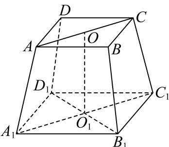 取 AC 中点 O，取 A1C1A_{1}C_{1}A1C1 中点 O1O_{1}O1 ，连接 OO1,B1D1OO_{1}, B_{1}D_{1}OO1,B1D1 . 因为四棱台 ABCD−A1B1C1D1ABCD-A_{1}B_{1}C_{1}D_{1}ABCD−A1B1C1D1 是正四棱台， 所以 OO1⊥OO_{1}\perpOO1⊥ 平面 A1B1C1D1A_{1}B_{1}C_{1}D_{1}A1B1C1D1 ， B1D1⊂B_{1}D_{1}\subsetB1D1⊂ 平面 A1B1C1D1A_{1}B_{1}C_{1}D_{1}A1B1C1D1 所以 OO1⊥B1D1OO_{1} \perp B_{1}D_{1}OO1⊥B1D1 , 又因为 A1B1C1D1A_{1}B_{1}C_{1}D_{1}A1B1C1D1 是正方形，所以 A1C1⊥B1D1A_{1}C_{1} \perp B_{1}D_{1}A1C1⊥B1D1 ， 且 A1C1∩OO1=O1,A1C1,OO1⊂A_{1}C_{1}\cap OO_{1} = O_{1},A_{1}C_{1},OO_{1}\subsetA1C1∩OO1=O1,A1C1,OO1⊂ 平面 A1C1CAA_{1}C_{1}CAA1C1CA ，所以 B1D1⊥B_{1}D_{1}\botB1D1⊥ 平面 A1C1CAA_{1}C_{1}CAA1C1CA AA1⊂AA_{1}\subsetAA1⊂ 平面 A1C1CAA_{1}C_{1}CAA1C1CA ，所以 AA1⊥B1D1AA_{1}\perp B_{1}D_{1}AA1⊥B1D1 所以异面直线 AA1AA_{1}AA1 与 D1B1D_{1}B_{1}D1B1 所成角的大小为 π2\frac{\pi}{2}2π . 故答案为： π2\frac{\pi}{2}2π . 第 8 题若函数 y=a⋅2x−12x+1(a∈R)y = \frac{a \cdot 2^x - 1}{2^x + 1} (a \in \mathbf{R})y=2x+1a⋅2x−1(a∈R) 是偶函数，则实数 a=a =a= ____. 展开答案与解析【答案】-1 【解析】 【分析】由偶函数定义建立方程，解得实数 a . 【详解】函数的定义域为R， 由题意可知 a⋅2x−12x+1=a⋅2−x−12−x+1\frac{a\cdot 2^x - 1}{2^x + 1} = \frac{a\cdot 2^{-x} - 1}{2^{-x} + 1}2x+1a⋅2x−1=2−x+1a⋅2−x−1 ，即 a⋅2x−12x+1=a−2x1+2x\frac{a\cdot 2^x - 1}{2^x + 1} = \frac{a - 2^x}{1 + 2^x}2x+1a⋅2x−1=1+2xa−2x 所以 (a+1)⋅2x=a+1(a+1)\cdot2^{x}=a+1(a+1)⋅2x=a+1 ， 因该等式对定义域内的任意 x 都成立，故 a+1=0a+1=0a+1=0 ， 解得 a=−1a = -1a=−1 故答案为：-1 第 9 题若复数 zzz 满足 ∣z∣=5\left|z\right| = \sqrt{5}∣z∣=5 , ∣z−1∣=∣Rez+1∣\left|z - 1\right| = \left|\mathbf{Re}z + 1\right|∣z−1∣=∣Rez+1∣ , 则复数 z=z =z= ____. 展开答案与解析【答案】 z=1+2iz=1+2iz=1+2i 或 z=1−2iz=1-2iz=1−2i . 【解析】 【分析】先设复数，再计算得出 a, b 即可求解. 【详解】设复数 z=a+bi,a,b∈Rz = a + bi, a, b \in Rz=a+bi,a,b∈R , 复数 zzz 满足 ∣z∣=5\left|z\right| = \sqrt{5}∣z∣=5 ， ∣z−1∣=∣Rez+1∣\left|z - 1\right| = \left|\mathbf{Re}z + 1\right|∣z−1∣=∣Rez+1∣ 所以 {a2+b2=5(a−1)2+b2=∣a+1∣\left\{ \begin{array}{l}a^{2} + b^{2} = 5\\ \sqrt{(a - 1)^{2} + b^{2}} = |a + 1| \end{array} \right.{a2+b2=5(a−1)2+b2=∣a+1∣ 所以 a2+4a−5=0a^{2}+4a-5=0a2+4a−5=0 ，a=1 或 a=-5（当 a=-5 时， b2=4a=−20<0b^{2}=4a=-20<0b2=4a=−20<0 ，与 b∈Rb\in Rb∈R 矛盾，故舍去）， 所以 {a=1b=±2\left\{\begin{aligned}a&=1\\ b&=\pm2\end{aligned}\right.{ab=1=±2 则复数 z=1+2iz = 1 + 2\mathrm{i}z=1+2i 或 z=1−2iz = 1 - 2\mathrm{i}z=1−2i 故答案为： z=1+2iz = 1 + 2\mathrm{i}z=1+2i 或 z=1−2iz = 1 - 2\mathrm{i}z=1−2i 第 10 题已知两个非负实数 aaa 、 bbb 满足 a+2b=2a + 2b = 2a+2b=2 ，则 (a−1)2+(b−4)2(a - 1)^2 + (b - 4)^2(a−1)2+(b−4)2 的最小值是 展开答案与解析【答案】10 【解析】 【分析】由 a=2-2b，代入结合二次函数单调性即可求解. 【详解】因为两个非负实数 aaa 、 bbb ， a+2b=2a + 2b = 2a+2b=2 ， 所以 a=2−2b≥0a = 2 - 2b \geq 0a=2−2b≥0 ， 0≤b≤10 \leq b \leq 10≤b≤1 所以 (a−1)2+(b−4)2=(1−2b)2+(b−4)2=5b2−12b+17(a - 1)^2 + (b - 4)^2 = (1 - 2b)^2 + (b - 4)^2 = 5b^2 - 12b + 17(a−1)2+(b−4)2=(1−2b)2+(b−4)2=5b2−12b+17 令 y=5b2−12b+17y=5b^{2}-12b+17y=5b2−12b+17 ，对称轴为 b=65b=\frac{6}{5}b=56 ， 由二次函数单调性可知当 b=1 时，取得最小值 10， 故答案为：10 第 11 题在平面中， e⃗1\vec{e}_1e1 和 e⃗2\vec{e}_2e2 是互相垂直的单位向量，向量 a⃗\vec{a}a 满足 ∣a⃗−6e⃗1∣=1\left|\vec{a} - 6\vec{e}_1\right| = 1∣a−6e1∣=1 ，向量 b⃗\vec{b}b 满足 ∣b⃗−6e⃗1∣+∣b⃗−8e⃗2∣=20\left|\vec{b} - 6\vec{e}_1\right| + \left|\vec{b} - 8\vec{e}_2\right| = 20b−6e1+b−8e2=20 ，则 ∣a⃗−b⃗∣\left|\vec{a} - \vec{b}\right|a−b 的最大值是 ____. 展开答案与解析【答案】16 【解析】 【分析】根据模长值得出圆的轨迹，再根据模长关系得出椭圆，最后应用圆与椭圆的位置关系得出最值即可. 【详解】因为 e1→\overrightarrow{e_1}e1 和 e2→\overrightarrow{e_2}e2 是互相垂直的单位向量，所以设 e1→=(1,0),e2→=(0,1)\overrightarrow{e_1} = (1,0),\overrightarrow{e_2} = (0,1)e1=(1,0),e2=(0,1) 向量 a⃗\vec{a}a 满足 ∣a⃗−6e⃗1∣=1\left|\vec{a} - 6\vec{e}_1\right| = 1∣a−6e1∣=1 ，表示以 (6,0)(6,0)(6,0) 为圆心，半径为1的圆， ∣6e1→−8e2→∣=36+64−96e1→⋅e2→=10\left|\overrightarrow{6e_1} - 8\overrightarrow{e_2}\right| = \sqrt{36 + 64 - 96\overrightarrow{e_1}\cdot\overrightarrow{e_2}} = 106e1−8e2=36+64−96e1⋅e2=10 ，向量 b⃗\vec{b}b 满足 ∣b⃗−6e1→∣+∣b⃗−8e2→∣=20\left|\vec{b} -6\overrightarrow{e_1}\right| + \left|\vec{b} -8\overrightarrow{e_2}\right| = 20b−6e1+b−8e2=20 表示长轴为 2a=202a = 202a=20 ，焦距 2c=102c = 102c=10 的椭圆，且 (6,0)(6,0)(6,0) 为椭圆的一个焦点， 因为 ∣a⃗−b⃗∣\left|\vec{a}-\vec{b}\right|a−b 表示以 (6,0)(6,0)(6,0) 为圆心，半径为1的圆上的点到椭圆上的点距离， 则 ∣a⃗−b⃗∣max=a+c+1=10+5+1=16.\left|\vec{a} -\vec{b}\right|_{\max} = a + c + 1 = 10 + 5 + 1 = 16.a−bmax=a+c+1=10+5+1=16. 故答案为：16. 第 12 题运动员关心的是在足球场上的哪些位置射门命中的角度较大。在真实的射门过程中，我们做一些假定： （1）将足球看成一个质点； （2）接近球门时，足球运动的轨迹与地面平行； （3）射门时，足球与球门之间无防守员； (4) 足球场平面图是一个矩形; （5）标准足球场的长度为 105 米，宽度为 68 米，球门的宽度为 7.32 米； 如图，以线段 AB 所在直线为 y 轴，以线段 AB 的垂直平分线为 x 轴建立平面直角坐标系， OOO 是球门中心，两门柱位置分别为点 AAA 、 BBB ，两个角球点为 CCC 、 DDD ， EFEFEF 是半场分界线. 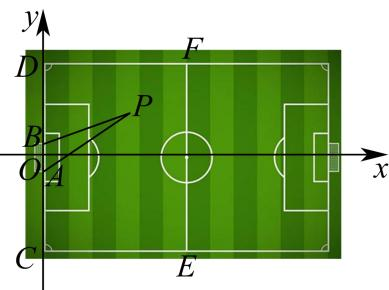 对于区域 CDEF 内，射门点 P(x,y)P(x,y)P(x,y) , 对于每一个确定的横坐标 xxx ，可以找到唯一的 yyy ，可以证明横坐标不变时， y=0y = 0y=0 时， ∠APB\angle APB∠APB 最大。此时，点 PPP 在 xxx 轴上是最佳射门点。 对于每一个确定的纵坐标 y(3.66<y<34)y(3.66 < y < 34)y(3.66<y<34) ，同样可以找到唯一的 x，当 x=x =x= ______ 时， ∠APB\angle APB∠APB 最大．此时，点 P 是最佳射门点． 展开答案与解析【答案】 y2−3.662\sqrt{y^2 - 3.66^2}y2−3.662 【解析】 【分析】作 △ABP\triangle ABP△ABP 的外接圆 QQQ ，得到圆心 QQQ 所在直线，由圆的圆心角和圆周角的关系找到 ∠APB\angle APB∠APB 最大时 P,QP,QP,Q 两点的位置关系，即可求得 xxx 的值. 【详解】如图 A(0,−3.66)A(0,-3.66)A(0,−3.66) ， B(0,3.66)B(0,3.66)B(0,3.66) ，设 P(x,y0)P(x,y_{0})P(x,y0) 作 △ABP\triangle ABP△ABP 的外接圆 QQQ ， ∵A(0,−3.66)\because A(0, -3.66)∵A(0,−3.66) ， B(0,3.66)B(0, 3.66)B(0,3.66) ， ∴\therefore∴ 圆心 QQQ 在 xxx 轴正半轴上. 则 ∠APB=12∠AQB=∠OQB\angle APB = \frac{1}{2}\angle AQB = \angle OQB∠APB=21∠AQB=∠OQB ∴当 ∠OQB\angle OQB∠OQB 最大时， ∠APB\angle APB∠APB 取最大值， QO=BQ2−BO2=BQ2−3.662, Q O = \sqrt {B Q ^ {2} - B O ^ {2}} = \sqrt {B Q ^ {2} - 3 . 6 6 ^ {2}}, QO=BQ2−BO2=BQ2−3.662, ∴cos∠OQB=OQBQ=BQ2−3.662BQ2=1−3.662BQ2, \therefore \cos \angle O Q B = \frac {O Q}{B Q} = \sqrt {\frac {B Q ^ {2} - 3 . 6 6 ^ {2}}{B Q ^ {2}}} = \sqrt {1 - \frac {3 . 6 6 ^ {2}}{B Q ^ {2}}}, ∴cos∠OQB=BQOQ=BQ2BQ2−3.662=1−BQ23.662, ∴当 BQ 取最小值时， cos∠OQB\cos\angle OQBcos∠OQB 取得最小值， ∵∠OQB∈(0,π2)\because\angle OQB\in\left(0,\frac{\pi}{2}\right)∵∠OQB∈(0,2π) ，所以 ∠OQB\angle OQB∠OQB 取最大值， 又∵BQ=PQ，点P为直线 y=y0y=y_{0}y=y0 上动点， ∴当 PQ⊥xPQ \perp xPQ⊥x 时，BQ = PQ 取得最小值 y0y_{0}y0 ，此时 QO=BQ2−3.662=y02−3.662QO = \sqrt{BQ^{2} - 3.66^{2}} = \sqrt{y_{0}^{2} - 3.66^{2}}QO=BQ2−3.662=y02−3.662 ，即 x=QO=y02−3.662x = QO = \sqrt{y_{0}^{2} - 3.66^{2}}x=QO=y02−3.662 . 故答案为： y2−3.662\sqrt{y^{2}-3.66^{2}}y2−3.662 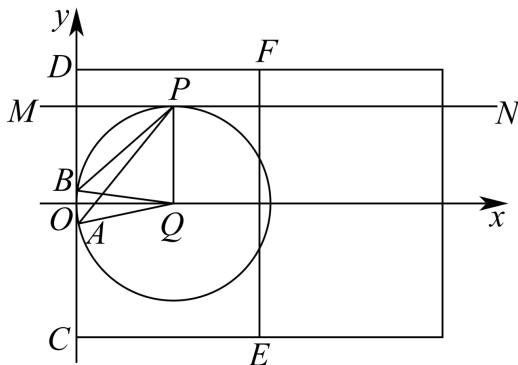 第 13 题设 aaa 、 bbb 为实数，且 a>b>0a > b > 0a>b>0 ，则下列不等式一定正确的是（） A. a4>b2a^4 > b^2a4>b2 B. sina>sinb\sin a > \sin bsina>sinb C. c>0c > 0c>0 时， (ba)c>1\left(\frac{b}{a}\right)^c > 1(ab)c>1 D. lna>lnb\ln a > \ln blna>lnb 展开答案与解析【答案】D 【解析】 【分析】应用特殊值法计算判断 A，B，C，应用对数函数单调性判断 D. 【详解】因为a、b为实数，且a>b>0， 当 a=12,b=14a = \frac{1}{2}, b = \frac{1}{4}a=21,b=41 , a4=116=b2=116a^4 = \frac{1}{16} = b^2 = \frac{1}{16}a4=161=b2=161 , A选项错误; 当 a=2π3,b=π3a = \frac{2\pi}{3}, b = \frac{\pi}{3}a=32π,b=3π , sin2π3=sinπ3\sin \frac{2\pi}{3} = \sin \frac{\pi}{3}sin32π=sin3π , B选项错误; 当 a=2,b=1,c=1a = 2, b = 1, c = 1a=2,b=1,c=1 时， (ba)c=12<1\left(\frac{b}{a}\right)^c = \frac{1}{2} < 1(ab)c=21<1 ，C选项错误； 当 a > b > 0 ，所以 lna>lnb\ln a > \ln blna>lnb ，D 选项正确； 故选：D. 第 14 题设 α\alphaα ， β\betaβ ， γ\gammaγ 是互不重合的平面，m，n 是互不重合的直线，给出四个命题： ①若 m∥αm \parallel \alpham∥α ， m∥βm \parallel \betam∥β ，则 α∥β\alpha \parallel \betaα∥β ②若 α⊥γ\alpha \perp \gammaα⊥γ ， β⊥γ\beta \perp \gammaβ⊥γ ，则 α⊥β\alpha \perp \betaα⊥β ③若 m⊥α,m⊥βm \perp \alpha, m \perp \betam⊥α,m⊥β ，则 α//β\alpha // \betaα//β ④若 m//α,n⊥αm // \alpha, n \perp \alpham//α,n⊥α ，则 m⊥nm \perp nm⊥n 其中正确命题的个数是（） A. 1 B. 2 C. 3 D. 4 展开答案与解析【答案】B 【解析】 【分析】根据线面位置关系的判定定理、性质定理，以及推论，逐项判定，即可求解. 【详解】由 α,β,γ\alpha, \beta, \gammaα,β,γ 是互不重合的平面，m，n 是互不重合的直线， 对于①中，由 m//α,m//βm//\alpha, m//\betam//α,m//β ，则 α//β\alpha//\betaα//β 或 α\alphaα 与 β\betaβ 相交，所以不正确； 对于②中，由 α⊥γ,β⊥γ\alpha \perp \gamma, \beta \perp \gammaα⊥γ,β⊥γ ，则 α⊥β\alpha \perp \betaα⊥β 或 α//β\alpha // \betaα//β 或 α\alphaα 与 β\betaβ 相交，所以不正确； 对于③中，由 m⊥α,m⊥βm \perp \alpha, m \perp \betam⊥α,m⊥β ，根据垂直于同一直线的两平面平行，可得 α//β\alpha // \betaα//β ， 所以正确的； 对于④中，由 m//α,n⊥αm//\alpha, n \perp \alpham//α,n⊥α ，可得 m⊥nm \perp nm⊥n ，所以正确. 故选：B. 第 15 题曲线 C 的方程为 Ax2−By2=λ2Ax^{2}-By^{2}=\lambda^{2}Ax2−By2=λ2 （A、B 不同时为 0），则下列说法正确的是（） A. 曲线 C 不可能是直线 B. 当 A>0,B<0A > 0, B < 0A>0,B<0 时，曲线是椭圆 C. 若曲线 C 是双曲线，则双曲线的渐近线与 λ\lambdaλ 无关 D. 曲线 C 是抛物线 展开答案与解析【答案】C 【解析】 【分析】根据 A, B 的取值结合圆、椭圆、双曲线方程的特点逐项分析曲线 C 的方程. 【详解】A. 当 B=0,A>0,λ>0B = 0, A > 0, \lambda > 0B=0,A>0,λ>0 时， x2=λ2Ax^{2} = \frac{\lambda^{2}}{A}x2=Aλ2 ，所以 x=±λ2Ax = \pm \sqrt{\frac{\lambda^{2}}{A}}x=±Aλ2 为两条直线，A 选项错误； B. 因为 A = 1, B = -1, λ>0\lambda > 0λ>0 , C:x2+y2=λ2C: x^{2} + y^{2} = \lambda^{2}C:x2+y2=λ2 ，所以曲线 C 是半径为 λ\lambdaλ 的圆，故 B 错误； C. 因为 Ax2−By2=λ2Ax^2 - By^2 = \lambda^2Ax2−By2=λ2 ， A>0,B>0A > 0, B > 0A>0,B>0 ，所以曲线 CCC 是双曲线，则 Aλ2x2−Bλ2y2=1\frac{A}{\lambda^2} x^2 - \frac{B}{\lambda^2} y^2 = 1λ2Ax2−λ2By2=1 ，则渐近线 y=±ABxy = \pm \sqrt{\frac{A}{B}} xy=±BAx ，故 C 正确； D. 因为曲线 Ax2−By2=λ2Ax^2 - By^2 = \lambda^2Ax2−By2=λ2 ， AAA 、 BBB 不同时为 0， 当 λ=0\lambda = 0λ=0 时， 当 B > 0, A > 0 时，曲线是两条相交直线； 当 B>0,A<0B > 0, A < 0B>0,A<0 时，曲线是点； 当 B⟨0,A⟩0B\langle 0,A\rangle 0B⟨0,A⟩0 时，曲线是点； 当 B<0,A<0B < 0, A < 0B<0,A<0 时，曲线是两条相交直线； 当 B=0, A<0 时，曲线是直线； 当 B=0,A>0B = 0, A > 0B=0,A>0 时，曲线是直线； 当 A=0,B>0A = 0, B > 0A=0,B>0 时，曲线是直线； 当 A=0, B<0 时，曲线是直线； 当 λ≠0\lambda \neq 0λ=0 时， 当 B>0,A>0B > 0, A > 0B>0,A>0 时，曲线是双曲线； 当 B>0,A<0B > 0, A < 0B>0,A<0 时，曲线不存在； 当 B⟨0,A⟩0,A≠−BB\langle 0,A\rangle 0,A\neq -BB⟨0,A⟩0,A=−B 时，曲线是椭圆； 当 B<0,A>0,A=−BB < 0, A > 0, A = -BB<0,A>0,A=−B 时，曲线是圆； 当 B < 0, A < 0 时，曲线是双曲线； 当 B=0,A<0B = 0, A < 0B=0,A<0 时，曲线不存在； 当 B=0, A>0 时，曲线是直线； 当 A=0,B>0A = 0, B > 0A=0,B>0 时，曲线不存在； 当 A=0, B<0 时，曲线是直线； 所以曲线 C 不能是抛物线，故 D 错误； 故选：C. 第 16 题已知等差数列 {an}\{a_{n}\}{an} 的公差不为零， SnS_{n}Sn 为其前 nnn 项和，存在正整数 kkk 满足 Sk=0S_{k} = 0Sk=0 ，有两个命题： 命题①：设数列公差 ddd ，则 d⋅S1<0d \cdot S_{1} < 0d⋅S1<0 。 命题②：i、j 均是小于 k 的正整数，则 Si⋅Sj=Sk−iSk−jS_{i} \cdot S_{j} = S_{k-i} S_{k-j}Si⋅Sj=Sk−iSk−j . 以上判断正确的是（） A. 命题①②都是真命题 B. 命题①是真命题，命题②是假命题 C. 命题①②都是假命题 D. 命题①是假命题，命题②是真命题 展开答案与解析【答案】D 【解析】 【分析】命题①：利用等差数列的求和公式，将条件 Sk=0S_{k}=0Sk=0 整理得到 a1=−(k−1)d2a_{1}=-\frac{(k-1)d}{2}a1=−2(k−1)d ，又 S1=a1S_{1}=a_{1}S1=a1 ，计算 d⋅S1d\cdot S_{1}d⋅S1 即可得解；命题②：利用等差数列的求和公式求解即可. 【详解】∵等差数列 {an}\left\{a_{n}\right\}{an} 的公差不为零， SnS_{n}Sn 为其前n项和， Sk=0S_{k}=0Sk=0 ， ∴ ka1+k(k−1)d2=0,∴a1=−(k−1)d2ka_{1}+\frac{k(k-1)d}{2}=0,\quad\therefore a_{1}=-\frac{(k-1)d}{2}ka1+2k(k−1)d=0,∴a1=−2(k−1)d 命题①：∵ S1=a1S_{1}=a_{1}S1=a1 ∴ d⋅S1=d⋅[−(k−1)d2]=−(k−1)d22d\cdot S_{1}=d\cdot\left[-\frac{(k-1)d}{2}\right]=-\frac{(k-1)d^{2}}{2}d⋅S1=d⋅[−2(k−1)d]=−2(k−1)d2 ∵ d≠0d\neq0d=0 ，∴ d2>0d^{2}>0d2>0 当k=1时， d⋅S1=0d\cdot S_{1}=0d⋅S1=0 ； 当k>1且 k∈Nk\in Nk∈N 时， d⋅S1<0d\cdot S_{1}<0d⋅S1<0 ；故命题①错误； 命题②：∵ a1=−(k−1)d2a_{1}=-\frac{(k-1)d}{2}a1=−2(k−1)d ，i、j均是小于k的正整数， ∴ Si⋅Sj=(−i(k−1)d2+i(i−1)d2)⋅(−j(k−1)d2+j(j−1)d2)=ijd2(i−k)(j−k)4S_{i}\cdot S_{j}=\left(-\frac{i(k-1)d}{2}+\frac{i(i-1)d}{2}\right)\cdot\left(-\frac{j(k-1)d}{2}+\frac{j(j-1)d}{2}\right)=\frac{ijd^{2}(i-k)(j-k)}{4}Si⋅Sj=(−2i(k−1)d+2i(i−1)d)⋅(−2j(k−1)d+2j(j−1)d)=4ijd2(i−k)(j−k) ∴ Sk−iSk−j=((k−i)a1+(k−i)(k−i−1)d2)⋅((k−j)a1+(k−j)(k−j−1)d2)S_{k-i}S_{k-j}=\left((k-i)a_{1}+\frac{(k-i)(k-i-1)d}{2}\right)\cdot\left((k-j)a_{1}+\frac{(k-j)(k-j-1)d}{2}\right)Sk−iSk−j=((k−i)a1+2(k−i)(k−i−1)d)⋅((k−j)a1+2(k−j)(k−j−1)d) =ijd2(k−i)(k−j)4=ijd2(i−k)(j−k)4, = \frac {i j d ^ {2} (k - i) (k - j)}{4} = \frac {i j d ^ {2} (i - k) (j - k)}{4}, =4ijd2(k−i)(k−j)=4ijd2(i−k)(j−k), ∴Si⋅Sj=Sk−iSk−j\therefore S_{i}\cdot S_{j} = S_{k - i}S_{k - j}∴Si⋅Sj=Sk−iSk−j ，故命题②正确. 故选：D. 第 17 题已知函数 f(x)=12sin2x−32cos2xf(x) = \frac{1}{2}\sin 2x - \frac{\sqrt{3}}{2}\cos 2xf(x)=21sin2x−23cos2x . （1）当 x∈[5π6,13π12)x \in \left[\frac{5\pi}{6}, \frac{13\pi}{12}\right)x∈[65π,1213π) 时，求函数 f(x)f(x)f(x) 的值域； （2）在 △ABC\triangle ABC△ABC 中，角 AAA 、 BBB 及 CCC 所对边的边长分别为 aaa 、 bbb 及 ccc ，若 f(C)=0f(C) = 0f(C)=0 ， a=2a = 2a=2 ， B=π4B = \frac{\pi}{4}B=4π ，求 bbb ： 展开答案与解析【答案】（1） [−1,−12)\left[-1,-\frac{1}{2}\right)[−1,−21) (2) b=23−2b=2\sqrt{3}-2b=23−2 或 b=23+2b=2\sqrt{3}+2b=23+2 【解析】 【分析】（1）利用辅助角公式将函数化为正弦型函数，再利用正弦型函数的性质计算即得； （2）由 f(C)=0f(C) = 0f(C)=0 计算出 CCC ，利用两角和的正弦公式求得 sinA\sin AsinA ，再借助于正弦定理计算即得. 【小问 1 详解】 f(x)=12sin2x−32cos2x=sin(2x−π3), f (x) = \frac {1}{2} \sin 2 x - \frac {\sqrt {3}}{2} \cos 2 x = \sin \left(2 x - \frac {\pi}{3}\right), f(x)=21sin2x−23cos2x=sin(2x−3π), 当 x∈[5π6,13π12)x \in \left[\frac{5\pi}{6}, \frac{13\pi}{12}\right)x∈[65π,1213π) 时， 2x−π3∈[4π3,11π6)2x - \frac{\pi}{3} \in \left[\frac{4\pi}{3}, \frac{11\pi}{6}\right)2x−3π∈[34π,611π) ， 则 sin(2x−π3)∈[−1,−12)\sin\left(2x-\frac{\pi}{3}\right)\in\left[-1,-\frac{1}{2}\right)sin(2x−3π)∈[−1,−21) ，即 y=f(x)y=f(x)y=f(x) 的值域为 [−1,−12)\left[-1,-\frac{1}{2}\right)[−1,−21) ; 【小问 2 详解】 f(C)=sin(2C−π3)=0f(C)=\sin\left(2C-\frac{\pi}{3}\right)=0f(C)=sin(2C−3π)=0 ，则 2C−π3=kπ(k∈Z)2C-\frac{\pi}{3}=k\pi(k\in\mathbf{Z})2C−3π=kπ(k∈Z) ，即 C=π6+kπ2(k∈Z)C=\frac{\pi}{6}+\frac{k\pi}{2}(k\in\mathbf{Z})C=6π+2kπ(k∈Z) ， 又 C∈(0,π)C \in (0, \pi)C∈(0,π) ，故 C=π6C = \frac{\pi}{6}C=6π 或 C=2π3C = \frac{2\pi}{3}C=32π ; 若 C=π6C = \frac{\pi}{6}C=6π ，由 B=π4B = \frac{\pi}{4}B=4π ，则 sinA=sin(π−B−C)=sin(B+C)\sin A = \sin (\pi - B - C) = \sin (B + C)sinA=sin(π−B−C)=sin(B+C) =sinπ6cosπ4+sinπ4cosπ6=12×22+22×32=2+64, = \sin \frac {\pi}{6} \cos \frac {\pi}{4} + \sin \frac {\pi}{4} \cos \frac {\pi}{6} = \frac {1}{2} \times \frac {\sqrt {2}}{2} + \frac {\sqrt {2}}{2} \times \frac {\sqrt {3}}{2} = \frac {\sqrt {2} + \sqrt {6}}{4}, =sin6πcos4π+sin4πcos6π=21×22+22×23=42+6, 由正弦定理 asinA=bsinB\frac{a}{\sin A} = \frac{b}{\sin B}sinAa=sinBb ，可得 b=asinBsinA=2×222+64=42(6−2)(6+2)(6−2)=23−2; b = \frac {a \sin B}{\sin A} = \frac {2 \times \frac {\sqrt {2}}{2}}{\frac {\sqrt {2} + \sqrt {6}}{4}} = \frac {4 \sqrt {2} (\sqrt {6} - \sqrt {2})}{(\sqrt {6} + \sqrt {2}) (\sqrt {6} - \sqrt {2})} = 2 \sqrt {3} - 2; b=sinAasinB=42+62×22=(6+2)(6−2)42(6−2)=23−2; 若 C=2π3C = \frac{2\pi}{3}C=32π ，由 B=π4B = \frac{\pi}{4}B=4π ，则 sinA=sin(π−B−C)=sin(B+C)\sin A = \sin (\pi - B - C) = \sin (B + C)sinA=sin(π−B−C)=sin(B+C) =sin2π3cosπ4+sinπ4cos2π3=32×22−22×12=6−24, = \sin \frac {2 \pi}{3} \cos \frac {\pi}{4} + \sin \frac {\pi}{4} \cos \frac {2 \pi}{3} = \frac {\sqrt {3}}{2} \times \frac {\sqrt {2}}{2} - \frac {\sqrt {2}}{2} \times \frac {1}{2} = \frac {\sqrt {6} - \sqrt {2}}{4}, =sin32πcos4π+sin4πcos32π=23×22−22×21=46−2, 由正弦定理 asinA=bsinB\frac{a}{\sin A} = \frac{b}{\sin B}sinAa=sinBb ，可得 b=asinBsinA=2×226−24=42(6+2)(6+2)(6−2)=23+2. b = \frac {a \sin B}{\sin A} = \frac {2 \times \frac {\sqrt {2}}{2}}{\frac {\sqrt {6} - \sqrt {2}}{4}} = \frac {4 \sqrt {2} (\sqrt {6} + \sqrt {2})}{(\sqrt {6} + \sqrt {2}) (\sqrt {6} - \sqrt {2})} = 2 \sqrt {3} + 2. b=sinAasinB=46−22×22=(6+2)(6−2)42(6+2)=23+2. 综上， b=23−2b=2\sqrt{3}-2b=23−2 或 b=23+2b=2\sqrt{3}+2b=23+2 . 第 18 题题图参照已有补源材料恢复，仍需结合原卷核验。 A 校高一年级共有学生 462 名，其中女生 224 名．为了解该校高一年级学生的身高和体重情况，按分层随机抽样从中获取 66 名学生的身高（cm）和体重（kg），其中 66 名学生的身高（从低到高排序三列，每列 22 人）汇总如下表（隐蔽部分信息数据），身高的频率分布表如下表（隐蔽了部分信息数据），66 名学生体重绘制茎叶图如下图． A 校 66 名高一年级学生身高数据与频率分布表： 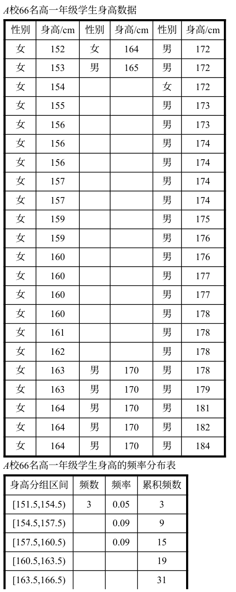 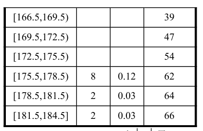 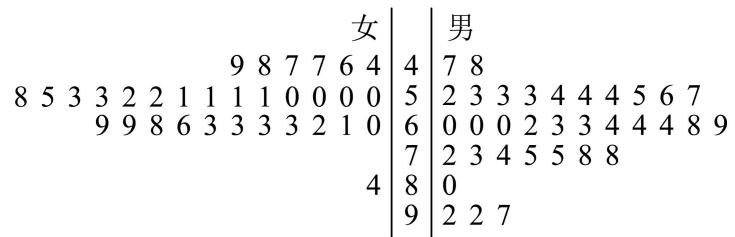 AAA 校66名高一年级学生体重的茎叶图（上图） (1) 能否推算出身高 165 cm165 \mathrm{~cm}165 cm 的具体人数? （2）求抽取的男生人数、抽取到的男生体重的中位数； （3）已知这66名学生中男生身高平均数为 173.1cm173.1\mathrm{cm}173.1cm ，方差为25.9；女生身高平均数为 161.3cm161.3\mathrm{cm}161.3cm ，方差为23.3。请计算该样本数据在区间 [x‾−2s,x‾+2s]\left[\overline{x} - 2s, \overline{x} + 2s\right][x−2s,x+2s] 中包含样本数据的个数。（其中 xxx 是样本平均数， sss 是样本标准差） 展开答案与解析【答案】（1）不能，理由见解析 (2) 抽取的男生人数为 34 人, 抽取到的男生体重的中位数为 63 (3) 65 【解析】 【分析】（1）结合表格可得身高为165、166的共8人，不能得到身高 165cm165\mathrm{cm}165cm 的具体人数； (2) 借助茎叶图可得抽取的男生人数, 再利用中位数定义可得抽取到的男生体重的中位数; （3）借助分层抽样的平均数与方差公式，可得 x‾\overline{x}x 与 sss ，即可得 [x‾−2s,x‾+2s][\overline{x} -2s,\overline{x} +2s][x−2s,x+2s] ，再借助身高数据表格即可得解. 【小问1详解】 由身高的频率分布表可得，身高位于 [163.5,166.5)[163.5, 166.5)[163.5,166.5) 的人数为 31−19=1231 - 19 = 1231−19=12 人， 由身高数据表格可得身高164的有4人，则身高为165、166的共8人， 故不能得到身高165cm的具体人数; 【小问 2 详解】 由茎叶图可得抽取的男生人数为34人， 抽取到的男生体重的中位数为 63+632=63\frac{63 + 63}{2} = 63263+63=63 【小问 3 详解】 x‾=173.1×34+161.3×3266≈167.4, \overline {{x}} = \frac {1 7 3 . 1 \times 3 4 + 1 6 1 . 3 \times 3 2}{6 6} \approx 1 6 7. 4, x=66173.1×34+161.3×32≈167.4, s2≈34×[25.9+(173.1−167.4)2]66+32×[23.3+(161.3−167.4)2]66≈59.42, s ^ {2} \approx \frac {3 4 \times \left[ 2 5 . 9 + (1 7 3 . 1 - 1 6 7 . 4) ^ {2} \right]}{6 6} + \frac {3 2 \times \left[ 2 3 . 3 + (1 6 1 . 3 - 1 6 7 . 4) ^ {2} \right]}{6 6} \approx 5 9. 4 2, s2≈6634×[25.9+(173.1−167.4)2]+6632×[23.3+(161.3−167.4)2]≈59.42, 则 s≈59.42≈7.7s \approx \sqrt{59.42} \approx 7.7s≈59.42≈7.7 则 x‾−2s≈167.4−2×7.7=152\overline{x} - 2s \approx 167.4 - 2 \times 7.7 = 152x−2s≈167.4−2×7.7=152 ， x‾+2s≈167.4+2×7.7=182.8\overline{x} + 2s \approx 167.4 + 2 \times 7.7 = 182.8x+2s≈167.4+2×7.7=182.8 则由身高数据表格可得位于区间 [152,182.8][152,182.8][152,182.8] 的人数为65人. 第 19 题原解析末尾线段比的两个数值不一致，具体推导及笔误待复核。 如图, 将直角三角形 SOASOASOA 绕直角边 SOSOSO 所在直线旋转一周形成圆锥 S−OS-OS−O . 已知圆锥 S−OS-OS−O 的底面半径为 3 cm3 \mathrm{~cm}3 cm , 圆锥的侧面积 15π cm215 \pi \mathrm{~cm}^{2}15π cm2 . 设 A、BA 、 BA、B 是底面圆周上的两点, 线段 ABABAB 不经过点 OOO . 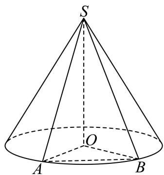 （1）求圆锥 S-O 的体积； （2）求证：直线 SA 与直线 OB 是异面直线； （3）二面角 A−SO−BA - SO - BA−SO−B 的大小为 2π3\frac{2\pi}{3}32π ，求直线 SASASA 与平面 SOBSOBSOB 所成角的大小. 展开答案与解析【答案】(1) 12πcm312 \pi \mathrm{cm}^{3}12πcm3 （2）证明见解析 （3） arcsin3310\arcsin \frac{3\sqrt{3}}{10}arcsin1033 【解析】 【分析】（1）由侧面积公式求得母线长，进而得到圆锥高，结合体积公式即可求解； (2) 由异面直线判定定理即可求解; （3）过点 AAA 作 AH⊥OBAH \perp OBAH⊥OB 于 HHH ，连接 SHSHSH ，确定 ∠ASH\angle ASH∠ASH 为直线 SASASA 与平面 SOBSOBSOB 所成角，进而可求解. 【小问 1 详解】 设圆锥的母线长为 lll ，底面半径为 rrr ， 由题意可得： πrl=15π⇒3πl=15π⇒l=5\pi rl = 15\pi \Rightarrow 3\pi l = 15\pi \Rightarrow l = 5πrl=15π⇒3πl=15π⇒l=5 所以 SO=52−32=4SO = \sqrt{5^2 - 3^2} = 4SO=52−32=4 所以圆锥 S−OS - OS−O 的体积 V=13πr2×SO=12πcm3V = \frac{1}{3}\pi r^2\times SO = 12\pi \mathrm{cm}^3V=31πr2×SO=12πcm3 【小问 2 详解】 因为 SA∩SA \capSA∩ 平面 SOB = S，OB ⊂ 平面 SOB, S∉OBS \notin OBS∈/OB ， 所以直线 SA 与直线 OB 是异面直线; 【小问 3 详解】 因为二面角 A-SO-B 的大小为 2π3\frac{2\pi}{3}32π , 由圆锥的结构可知： SO⊥OA,SO⊥OBSO \perp OA, SO \perp OBSO⊥OA,SO⊥OB ， 所以 ∠AOB\angle AOB∠AOB 即为二面角 A−SO−BA - SO - BA−SO−B 的平面角， 所以 ∠AOB=2π3\angle AOB = \frac{2\pi}{3}∠AOB=32π ，又 OA=OB=3OA = OB = 3OA=OB=3 所以 AB=OA2+OB2−2OA⋅OBcos2π3=33AB = \sqrt{OA^2 + OB^2 - 2OA \cdot OB \cos \frac{2\pi}{3}} = 3\sqrt{3}AB=OA2+OB2−2OA⋅OBcos32π=33 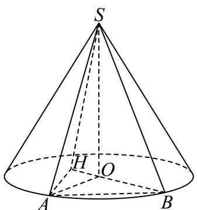 过点 A 作 AH⊥OBAH \perp OBAH⊥OB 于 H，连接 SH， 因为 AH⊥OB,AH⊥SO,OB,SOAH \perp OB, AH \perp SO, OB, SOAH⊥OB,AH⊥SO,OB,SO 为平面 SOB 两条相交直线， 所以 AH⊥AH \perpAH⊥ 平面 SOBSOBSOB 所以 ∠ASH\angle ASH∠ASH 即为直线 SASASA 与平面 SOBSOBSOB 所成角， 又 AH=AB×sin30∘=332AH = AB \times \sin 30^{\circ} = \frac{3\sqrt{3}}{2}AH=AB×sin30∘=233 , 又 AH⊥AH \perpAH⊥ 平面 SOBSOBSOB ， SHSHSH 在平面 SOBSOBSOB 内， 所以 AH⊥SHAH \perp SHAH⊥SH ， 所以 sin∠ASH=AHSA=335=3310\sin \angle ASH = \frac{AH}{SA} = \frac{3\sqrt{3}}{5} = \frac{3\sqrt{3}}{10}sin∠ASH=SAAH=533=1033 所以 ∠ASH=arcsin3310\angle ASH = \arcsin \frac{3\sqrt{3}}{10}∠ASH=arcsin1033 , 即直线 SASASA 与平面 SOBSOBSOB 所成角大小为 arcsin3310\arcsin \frac{3\sqrt{3}}{10}arcsin1033 . 第 20 题原解析关于交点判别式和切线退化的讨论不充分，需核题目条件及边界。 椭圆 x2a2+y2b2=1(a>b>0)\frac{x^2}{a^2} + \frac{y^2}{b^2} = 1 (a > b > 0)a2x2+b2y2=1(a>b>0) ， PPP 是第一象限内椭圆上的点， A1(−a,0)A_1(-a,0)A1(−a,0) ， B1(0,b)B_1(0,b)B1(0,b) ， ∣A1B1∣=5|A_1B_1| = \sqrt{5}∣A1B1∣=5 ，椭圆的离心率是 32\frac{\sqrt{3}}{2}23 。 M(−t,0)M(-t,0)M(−t,0) ， N(t,0)N(t,0)N(t,0) ， t>0t > 0t>0 且 t≠at \neq at=a 。 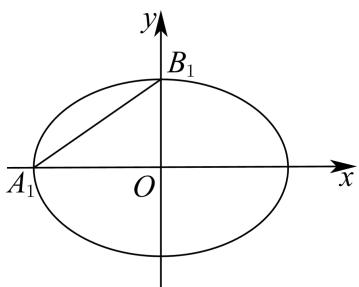 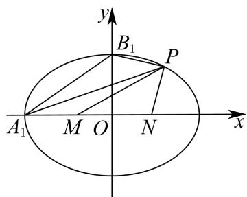 图1 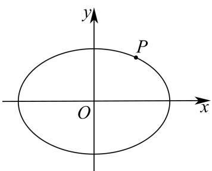 图3 图2 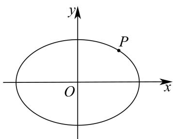 备用图 （1）求椭圆的方程并在下图 1 中作出椭圆的左焦点，写出作图依据； (2)如图2, 设 t=1t = 1t=1 , 三角形 PMNPMNPMN 的面积记为 S1S_{1}S1 , 三角形 PA1B1PA_{1}B_{1}PA1B1 的面积记为 S2S_{2}S2 , 若 S2=2S1S_{2} = 2S_{1}S2=2S1 , 求点 PPP 的坐标; (3) 设 P(x0,y0)P(x_{0}, y_{0})P(x0,y0) ，连结 PM 与椭圆交于点 A，连结 PN 与椭圆交于点 B，判断 ∣PM∣∣MA∣+∣PN∣∣NB∣\frac{|PM|}{|MA|} + \frac{|PN|}{|NB|}∣MA∣∣PM∣+∣NB∣∣PN∣ 是否为定值？请说明理由. 展开答案与解析【答案】（1）椭圆的方程为 x24+y2=1\frac{x^{2}}{4}+y^{2}=14x2+y2=1 ，作图见解析 (2) (85,35)\left(\frac{8}{5},\frac{3}{5}\right)(58,53) （3）为定值 ∣8+2t24−t2∣\left|\frac{8+2t^{2}}{4-t^{2}}\right|4−t28+2t2 【解析】 【分析】（1）根据椭圆中 a,b,ca, b, ca,b,c 的关系求解椭圆方程即可，利用椭圆的定义作图即可得椭圆的左焦点； （2）设 P(x0,y0)P\left(x_0,y_0\right)P(x0,y0) ，则 x024+y02=1\frac{x_0^2}{4} +y_0^2 = 14x02+y02=1 ，根据三角形面积公式即可得 S1S_{1}S1 ， S1S_{1}S1 关于 x0,y0x_0,y_0x0,y0 的式子，利用面积比例求解 x0,y0x_0,y_0x0,y0 即可得所求； （3）设 lPB:x=my+tl_{PB}: x = my + tlPB:x=my+t ，其中 m=x0−ty0m = \frac{x_0 - t}{y_0}m=y0x0−t ， lPA:x=ny−tl_{PA}: x = ny - tlPA:x=ny−t ，其中 n=x0+ty0n = \frac{x_0 + t}{y_0}n=y0x0+t ，分别与椭圆方程联立，根据根于系数的关系得 yBy_ByB 与 y0y_0y0 ， yAy_AyA 与 y0y_0y0 的关系，再根据线段比例关系计算验证 ∣PM∣∣MA∣+∣PN∣∣NB∣\frac{|PM|}{|MA|} + \frac{|PN|}{|NB|}∣MA∣∣PM∣+∣NB∣∣PN∣ 是否为定值即可. 【小问 1 详解】 因为椭圆 x2a2+y2b2=1(a>b>0)\frac{x^2}{a^2} +\frac{y^2}{b^2} = 1(a > b > 0)a2x2+b2y2=1(a>b>0) 中 A1(−a,0),B1(0,b),∣A1B1∣=5A_{1}(-a,0),B_{1}(0,b),|A_{1}B_{1}| = \sqrt{5}A1(−a,0),B1(0,b),∣A1B1∣=5 ，椭圆的离心率是 32,\frac{\sqrt{3}}{2},23, 【小问2详解】 则 {a2+b2=5ca=32a2=b2+c2\left\{ \begin{array}{l} \sqrt{a^2 + b^2} = \sqrt{5} \\ \frac{c}{a} = \frac{\sqrt{3}}{2} \\ a^2 = b^2 + c^2 \end{array} \right.⎩⎨⎧a2+b2=5ac=23a2=b2+c2 ，解得 a=2,b=1,c=3a = 2, b = 1, c = \sqrt{3}a=2,b=1,c=3 ， 则椭圆的方程为 x24+y2=1\frac{x^2}{4} + y^2 = 14x2+y2=1 如下图：以 B1B_{1}B1 为圆心，以 OA1OA_{1}OA1 的长为半径在线段 OA1OA_{1}OA1 上画圆弧，与线段 OA1OA_{1}OA1 的交点即为椭圆的左焦点 F1(−3,0)F_{1}\left(-\sqrt{3},0\right)F1(−3,0) ; 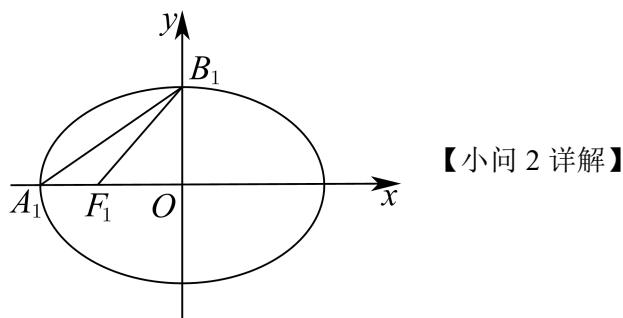 设 P(x0,y0)P\left(x_0,y_0\right)P(x0,y0) ，则 x024+y02=1\frac{x_0^2}{4} +y_0^2 = 14x02+y02=1 ①，且 0<x0<2,0<y0<10 < x_{0} < 2,0 < y_{0} < 10<x0<2,0<y0<1 当 t=1t = 1t=1 时， M(−1,0)M(-1,0)M(−1,0) ， N(1,0)N(1,0)N(1,0) 又 S1=S△PMN=12∣MN∣⋅y0=12×2⋅y0=y0S_{1} = S_{\triangle PMN} = \frac{1}{2}\big|M N\big|\cdot y_{0} = \frac{1}{2}\times 2\cdot y_{0} = y_{0}S1=S△PMN=21MN⋅y0=21×2⋅y0=y0 因为 A1(−2,0)A_{1}(-2,0)A1(−2,0) ， B1(0,1)B_{1}(0,1)B1(0,1) ，所以直线 A1B1A_{1}B_{1}A1B1 的方程为 x−2+y=1\frac{x}{-2} + y = 1−2x+y=1 ，即 x−2y+2=0x - 2y + 2 = 0x−2y+2=0 故点 P(x0,y0)P\left(x_0,y_0\right)P(x0,y0) 到直线 A1B1A_{1}B_{1}A1B1 的距离 dP=∣x0−2y0+2∣12+(−2)2=∣x0−2y0+2∣5d_P = \frac{\left|x_0 - 2y_0 + 2\right|}{\sqrt{1^2 + (-2)^2}} = \frac{\left|x_0 - 2y_0 + 2\right|}{\sqrt{5}}dP=12+(−2)2∣x0−2y0+2∣=5∣x0−2y0+2∣ S2=S△PA1B1=12∣A1B1∣⋅dP=12×5⋅∣x0−2y0+2∣5=∣x0−2y0+2∣2=x0−2y0+22, S _ {2} = S _ {\triangle P A _ {1} B _ {1}} = \frac {1}{2} \left| A _ {1} B _ {1} \right| \cdot d _ {P} = \frac {1}{2} \times \sqrt {5} \cdot \frac {\left| x _ {0} - 2 y _ {0} + 2 \right|}{\sqrt {5}} = \frac {\left| x _ {0} - 2 y _ {0} + 2 \right|}{2} = \frac {x _ {0} - 2 y _ {0} + 2}{2}, S2=S△PA1B1=21∣A1B1∣⋅dP=21×5⋅5∣x0−2y0+2∣=2∣x0−2y0+2∣=2x0−2y0+2, 因为 S2=2S1S_{2} = 2S_{1}S2=2S1 ，所以 x0−2y0+22=2y0\frac{x_0 - 2y_0 + 2}{2} = 2y_02x0−2y0+2=2y0 ，即 x0−6y0+2=0x_0 - 6y_0 + 2 = 0x0−6y0+2=0 ②， 联立①②，且 0<x0<2,0<y0<10 < x_0 < 2, 0 < y_0 < 10<x0<2,0<y0<1 ，解得 x0=85,y0=35x_0 = \frac{8}{5}, y_0 = \frac{3}{5}x0=58,y0=53 故点 P 的坐标为 (85,35)\left(\frac{8}{5}, \frac{3}{5}\right)(58,53) ; 【小问 3 详解】 如图所示 M(−t,0)M(-t,0)M(−t,0) ， N(t,0)N(t,0)N(t,0) ， t>0t > 0t>0 且 t≠at \neq at=a ， P(x0,y0)P(x_0,y_0)P(x0,y0) ，则 x024+y02=1\frac{x_0^2}{4} + y_0^2 = 14x02+y02=1 ， 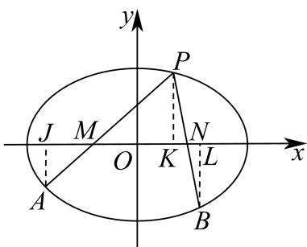 过 A 作 AJ⊥xAJ \perp xAJ⊥x 轴于 J，过 B 作 BL⊥xBL \perp xBL⊥x 轴于 L， 设 lPB:x=my+tl_{PB}: x = my + tlPB:x=my+t ，其中 m=x0−ty0m = \frac{x_0 - t}{y_0}m=y0x0−t ， {x=my+tx24+y2=1⇒(m2+4)y2+2my+t2−4=0,Δ>0\left\{ \begin{array}{l} x = my + t \\ \frac{x^2}{4} + y^2 = 1 \end{array} \right. \Rightarrow (m^2 + 4)y^2 + 2my + t^2 - 4 = 0, \Delta > 0{x=my+t4x2+y2=1⇒(m2+4)y2+2my+t2−4=0,Δ>0 恒成立， 所以 yB+yP=yB+y0=−2mtm2+4,yBy0=t2−4m2+4y_{B} + y_{P} = y_{B} + y_{0} = \frac{-2mt}{m^{2} + 4}, y_{B}y_{0} = \frac{t^{2} - 4}{m^{2} + 4}yB+yP=yB+y0=m2+4−2mt,yBy0=m2+4t2−4 , yBy0=t2−4(x0−ty0)2+4⇒yB=y0(t2−4)(x0−t)2+4y02, y _ {B} y _ {0} = \frac {t ^ {2} - 4}{\left(\frac {x _ {0} - t}{y _ {0}}\right) ^ {2} + 4} \Rightarrow y _ {B} = \frac {y _ {0} (t ^ {2} - 4)}{(x _ {0} - t) ^ {2} + 4 y _ {0} ^ {2}}, yBy0=(y0x0−t)2+4t2−4⇒yB=(x0−t)2+4y02y0(t2−4), 设 lPA:x=ny−tl_{PA}: x = ny - tlPA:x=ny−t ，其中 n=x0+ty0n = \frac{x_0 + t}{y_0}n=y0x0+t ， {x=ny−tx24+y2=1⇒(n2+4)y2−2nty+t2−4=0,Δ>0\left\{ \begin{array}{l} x = ny - t \\ \frac{x^2}{4} + y^2 = 1 \end{array} \right. \Rightarrow (n^2 + 4)y^2 - 2nty + t^2 - 4 = 0, \Delta > 0{x=ny−t4x2+y2=1⇒(n2+4)y2−2nty+t2−4=0,Δ>0 恒成立， 所以 yA+yP=yA+y0=2ntn2+4,yAy0=t2−4n2+4y_{A} + y_{P} = y_{A} + y_{0} = \frac{2nt}{n^{2} + 4}, y_{A}y_{0} = \frac{t^{2} - 4}{n^{2} + 4}yA+yP=yA+y0=n2+42nt,yAy0=n2+4t2−4 , yAy0=t2−4(x0+ty0)2+4⇒yA=y0(t2−4)(x0+t)2+4y02, y _ {A} y _ {0} = \frac {t ^ {2} - 4}{\left(\frac {x _ {0} + t}{y _ {0}}\right) ^ {2} + 4} \Rightarrow y _ {A} = \frac {y _ {0} (t ^ {2} - 4)}{(x _ {0} + t) ^ {2} + 4 y _ {0} ^ {2}}, yAy0=(y0x0+t)2+4t2−4⇒yA=(x0+t)2+4y02y0(t2−4), 因为 ∣PM∣∣MA∣=∣PK∣∣AJ∣,∣PN∣∣NB∣=∣PK∣∣BL∣\frac{|PM|}{|MA|}=\frac{|PK|}{|AJ|},\frac{|PN|}{|NB|}=\frac{|PK|}{|BL|}∣MA∣∣PM∣=∣AJ∣∣PK∣,∣NB∣∣PN∣=∣BL∣∣PK∣ , 所以∣PM∣∣MA∣+∣PN∣∣NB∣=∣PK∣∣AJ∣+∣PK∣∣BL∣=∣y0−yA+y0−yB∣=∣−y0(1yA+1yB)∣ \text {所以} \frac {| P M |}{| M A |} + \frac {| P N |}{| N B |} = \frac {| P K |}{| A J |} + \frac {| P K |}{| B L |} = \left| \frac {y _ {0}}{- y _ {A}} + \frac {y _ {0}}{- y _ {B}} \right| = \left| - y _ {0} \left(\frac {1}{y _ {A}} + \frac {1}{y _ {B}}\right) \right| 所以∣MA∣∣PM∣+∣NB∣∣PN∣=∣AJ∣∣PK∣+∣BL∣∣PK∣=−yAy0+−yBy0=−y0(yA1+yB1) =∣−y0((x0+t)2+4y02y0(t2−4)+(x0−t)2+4y02y0(t2−4))∣=∣2(x02+4y02)+2t24−t2∣=∣8+2t24−t2∣为定值， = \left| - y _ {0} \left(\frac {\left(x _ {0} + t\right) ^ {2} + 4 y _ {0} ^ {2}}{y _ {0} (t ^ {2} - 4)} + \frac {\left(x _ {0} - t\right) ^ {2} + 4 y _ {0} ^ {2}}{y _ {0} (t ^ {2} - 4)}\right) \right| = \left| \frac {2 \left(x _ {0} ^ {2} + 4 y _ {0} ^ {2}\right) + 2 t ^ {2}}{4 - t ^ {2}} \right| = \left| \frac {8 + 2 t ^ {2}}{4 - t ^ {2}} \right| \text {为定值，} =−y0(y0(t2−4)(x0+t)2+4y02+y0(t2−4)(x0−t)2+4y02)=4−t22(x02+4y02)+2t2=4−t28+2t2为定值， 所以 ∣PM∣∣MA∣+∣PN∣∣NB∣\frac{|PM|}{|MA|} +\frac{|PN|}{|NB|}∣MA∣∣PM∣+∣NB∣∣PN∣ 为定值 ∣8+2t24−t2∣\left|\frac{8 + 2t^2}{4 - t^2}\right|4−t28+2t2 第 21 题记 y=f′(x)y = f'(x)y=f′(x) ， y=g′(x)y = g'(x)y=g′(x) 分别为函数 y=f(x)y = f(x)y=f(x) 和 y=g(x)y = g(x)y=g(x) 的导数，存在 x0∈Rx_0 \in \mathbf{R}x0∈R ，满足 f(x0)=g(x0)f(x_0) = g(x_0)f(x0)=g(x0) 且 f′(x0)=g′(x0)f'(x_0) = g'(x_0)f′(x0)=g′(x0) ，则称 x0x_0x0 为 y=f(x)y = f(x)y=f(x) 和 y=g(x)y = g(x)y=g(x) 的一个“Ω点”. （1）若函数 f(x)=ax2−1f(x) = ax^2 - 1f(x)=ax2−1 与 g(x)=lnxg(x) = \ln xg(x)=lnx 存在“Ω点”，求实数 aaa 的值； （2）证明函数 f(x)=sinxf(x)=\sin xf(x)=sinx 与 g(x)=x2+2x−2g(x)=x^{2}+2x-2g(x)=x2+2x−2 不存在“Ω点”； （3）已知函数 f(x)=−x2+af(x) = -x^2 + af(x)=−x2+a ， g(x)=bexxg(x) = \frac{be^x}{x}g(x)=xbex ，对任意的 a>0a > 0a>0 ，判断是否存在 b>0b > 0b>0 ，使得函数 y=f(x)y = f(x)y=f(x) 和 y=g(x)y = g(x)y=g(x) 在区间 (0,+∞)(0, +\infty)(0,+∞) 内存在“ Ω\OmegaΩ 点”，请说明理由. 展开答案与解析【答案】(1) a=e2a=\frac{e}{2}a=2e ; （2）证明见解析； （3）存在，理由见解析. 【解析】 【分析】（1）求导，设“Ω点”为 x0x_{0}x0 ，解方程组 {f(x0)=g(x0)f′(x0)=g′(x0)\left\{\begin{aligned}f(x_{0})&=g(x_{0})\\ f'(x_{0})&=g'(x_{0})\end{aligned}\right.{f(x0)f′(x0)=g(x0)=g′(x0) ，可得结论. （2）假设存在“ Ω\OmegaΩ 点”为 x0x_0x0 ，解方程组 {f(x0)=g(x0)f′(x0)=g′(x0)\left\{ \begin{array}{l} f(x_0) = g(x_0) \\ f'(x_0) = g'(x_0) \end{array} \right.{f(x0)=g(x0)f′(x0)=g′(x0) ，应用等式无解可得结论； （3）设“ Ω\OmegaΩ 点”为 x0x_0x0 ，由 {f(x0)=g(x0)f′(x0)=g′(x0)\left\{ \begin{array}{l} f(x_0) = g(x_0) \\ f'(x_0) = g'(x_0) \end{array} \right.{f(x0)=g(x0)f′(x0)=g′(x0) ，用 x0x_0x0 表示出 aaa ，由 a>0a > 0a>0 求得 x0x_0x0 的范围，利用导数求得 bbb 的范围即可求解. 【小问 1 详解】 设 f(x)=ax2−1f(x) = ax^{2} - 1f(x)=ax2−1 ， g(x)=lnxg(x) = \ln xg(x)=lnx ，则 f′(x)=2axf^{\prime}(x) = 2axf′(x)=2ax ， g′(x)=1xg^{\prime}(x) = \frac{1}{x}g′(x)=x1 由题意得： x0x_{0}x0 需同时满足： {f(x0)=g(x0)f′(x0)=g′(x0)\left\{\begin{aligned}f(x_{0})&=g(x_{0})\\ f'(x_{0})&=g'(x_{0})\end{aligned}\right.{f(x0)f′(x0)=g(x0)=g′(x0) ，故 {ax02−1=lnx02ax0=1x0⇒ax02=12\left\{\begin{aligned}ax_{0}^{2}&-1=\ln x_{0}\\ 2ax_{0}&=\frac{1}{x_{0}}\Rightarrow ax_{0}^{2}=\frac{1}{2}\end{aligned}\right.⎩⎨⎧ax022ax0−1=lnx0=x01⇒ax02=21 所以 12−1=lnx0⇒−12=lnx0⇒x0=e−12=1e\frac{1}{2} - 1 = \ln x_0 \Rightarrow -\frac{1}{2} = \ln x_0 \Rightarrow x_0 = e^{-\frac{1}{2}} = \frac{1}{\sqrt{e}}21−1=lnx0⇒−21=lnx0⇒x0=e−21=e1 得 a⋅(1e)2=12⇒a⋅1e=12⇒a=e2a \cdot \left(\frac{1}{\sqrt{\mathrm{e}}}\right)^2 = \frac{1}{2} \Rightarrow a \cdot \frac{1}{\mathrm{e}} = \frac{1}{2} \Rightarrow a = \frac{\mathrm{e}}{2}a⋅(e1)2=21⇒a⋅e1=21⇒a=2e ，所以 a=e2a = \frac{\mathrm{e}}{2}a=2e . 【小问 2 详解】 由题意 x0x_0x0 需同时满足： {f(x0)=g(x0)f′(x0)=g′(x0)\left\{ \begin{array}{l}f(x_0) = g(x_0)\\ f'(x_0) = g'(x_0) \end{array} \right.{f(x0)=g(x0)f′(x0)=g′(x0) 令 sinx0=x02+2x0−2\sin x_{0}=x_{0}^{2}+2x_{0}-2sinx0=x02+2x0−2 函数 f(x)=sinxf(x)=\sin xf(x)=sinx 有 f′(x)=cosxf'(x)=\cos xf′(x)=cosx ，函数 g(x)=x2+2x−2g(x)=x^{2}+2x-2g(x)=x2+2x−2 ，有 g′(x)=2x+2g'(x)=2x+2g′(x)=2x+2 ， 令 2x0+2=cosx02x_{0} + 2 = \cos x_{0}2x0+2=cosx0 ，所以 sin2x0+cos2x0=(x02+2x0−2)2+(2x0+2)2=1\sin^2 x_0 + \cos^2 x_0 = (x_0^2 + 2x_0 - 2)^2 + (2x_0 + 2)^2 = 1sin2x0+cos2x0=(x02+2x0−2)2+(2x0+2)2=1 (x0+1)4−2(x0+1)2+8=0 \left(x _ {0} + 1\right) ^ {4} - 2 \left(x _ {0} + 1\right) ^ {2} + 8 = 0 (x0+1)4−2(x0+1)2+8=0 因为 Δ=4−4×1×8=−28<0\Delta = 4 - 4\times 1\times 8 = -28 < 0Δ=4−4×1×8=−28<0 ，所以 x0x_0x0 无解， 故函数 f(x)=sinxf(x) = \sin xf(x)=sinx 与 g(x)=x2+2x−2g(x) = x^2 + 2x - 2g(x)=x2+2x−2 不存在“Ω点”； 【小问 3 详解】 对任意的 a > 0，存在 b > 0，使得函数 y=f(x)y = f(x)y=f(x) 和 y=g(x)y = g(x)y=g(x) 在区间 (0,+∞)(0, +\infty)(0,+∞) 内存在“Ω 点”. 设 f(x)=−x2+af(x) = -x^{2} + af(x)=−x2+a ， g(x)=bexxg(x) = \frac{be^x}{x}g(x)=xbex ，则 f′(x)=−2xf^{\prime}(x) = -2xf′(x)=−2x ， g′(x)=b⋅ex(x−1)x2g^{\prime}(x) = b\cdot \frac{\mathrm{e}^{x}(x - 1)}{x^{2}}g′(x)=b⋅x2ex(x−1) 函数 y=f(x)y = f(x)y=f(x) 与 y=g(x)y = g(x)y=g(x) 在区间 (0,+∞)(0, +\infty)(0,+∞) 内存在“Ω 点”， 则 x0>0x_{0}>0x0>0 且需同时满足： {f(x0)=g(x0)f′(x0)=g′(x0)\left\{\begin{aligned}f(x_{0})&=g(x_{0})\\ f'(x_{0})&=g'(x_{0})\end{aligned}\right.{f(x0)f′(x0)=g(x0)=g′(x0) ，即 {−x02+a=bex0x0−2x0=b⋅ex0(x0−1)x02\left\{\begin{aligned}-x_{0}^{2}+a&=\frac{b\mathrm{e}^{x_{0}}}{x_{0}}\\ -2x_{0}&=b\cdot\frac{\mathrm{e}^{x_{0}}(x_{0}-1)}{x_{0}^{2}}\end{aligned}\right.⎩⎨⎧−x02+a−2x0=x0bex0=b⋅x02ex0(x0−1) 得： b=(−x02+a)x0ex0b=\frac{(-x_{0}^{2}+a)x_{0}}{\mathrm{e}^{x_{0}}}b=ex0(−x02+a)x0 且 b=−2x03ex0(x0−1)b=\frac{-2x_{0}^{3}}{\mathrm{e}^{x_{0}}(x_{0}-1)}b=ex0(x0−1)−2x03 , 联立得： −2x03ex0(x0−1)=(−x02+a)x0ex0⇒2x03x0−1=(x02−a)x0,\frac{-2x_0^3}{\mathrm{e}^{x_0}(x_0 - 1)} = \frac{(-x_0^2 + a)x_0}{\mathrm{e}^{x_0}}\Rightarrow \frac{2x_0^3}{x_0 - 1} = (x_0^2 -a)x_0,ex0(x0−1)−2x03=ex0(−x02+a)x0⇒x0−12x03=(x02−a)x0, 因为 x0>0x_0 > 0x0>0 所以 2x02x0−1=x02−a⇒a=−2x02x0−1+x02=x02(1−2x0−1)=x02⋅x0−3x0−1\frac{2x_0^2}{x_0 - 1} = x_0^2 - a \Rightarrow a = -\frac{2x_0^2}{x_0 - 1} + x_0^2 = x_0^2\left(1 - \frac{2}{x_0 - 1}\right) = x_0^2 \cdot \frac{x_0 - 3}{x_0 - 1}x0−12x02=x02−a⇒a=−x0−12x02+x02=x02(1−x0−12)=x02⋅x0−1x0−3 , 由 a>0a > 0a>0 得： x02⋅x0−3x0−1>0x_0^2\cdot \frac{x_0 - 3}{x_0 - 1} >0x02⋅x0−1x0−3>0 ， 又因为 x0>0x_0 > 0x0>0 ，所以 x0−3x0−1>0\frac{x_0 - 3}{x_0 - 1} > 0x0−1x0−3>0 ，解得 x0∈(3,+∞)∪(0,1)x_0 \in (3, +\infty) \cup (0, 1)x0∈(3,+∞)∪(0,1) ， 此时 b=−2x03ex0(x0−1)b = \frac{-2x_0^3}{\mathrm{e}^{x_0}(x_0 - 1)}b=ex0(x0−1)−2x03 ，当 b>0b > 0b>0 ，所以 x0∈(0,1)x_0\in (0,1)x0∈(0,1) 当 x∈(0,1)x \in (0,1)x∈(0,1) ，设 s(x)=x2⋅x−3x−1s(x) = x^2 \cdot \frac{x - 3}{x - 1}s(x)=x2⋅x−1x−3 ， s′(x)=2x3−3x2+3(x−1)2=2x3+3(1−x2)(x−1)2>0s'(x) = \frac{2x^3 - 3x^2 + 3}{(x - 1)^2} = \frac{2x^3 + 3(1 - x^2)}{(x - 1)^2} > 0s′(x)=(x−1)22x3−3x2+3=(x−1)22x3+3(1−x2)>0 ， 故 s(x)s(x)s(x) 在 (0,1)(0,1)(0,1) 为增函数，且 s(0)=0s(0) = 0s(0)=0 ，而 x→1x\to 1x→1 时， s(x)→+∞s(x)\rightarrow +\inftys(x)→+∞ 故对于任意 a > 0，总存在 x0∈(0,1)x_{0} \in (0,1)x0∈(0,1) ，使得 2x02x0−1=x02−a\frac{2x_{0}^{2}}{x_{0}-1} = x_{0}^{2} - ax0−12x02=x02−a ， 令 h(x)=−2x3ex(x−1),0<x<1,h(x)=\frac{-2x^{3}}{\mathrm{e}^{x}(x-1)},0<x<1,h(x)=ex(x−1)−2x3,0<x<1, 求导得 h′(x)=−6x2⋅ex(x−1)−2x3⋅ex(x−1)−2x3⋅ex[ex(x−1)]2h'(x)=-\frac{6x^{2}\cdot\mathrm{e}^{x}(x-1)-2x^{3}\cdot\mathrm{e}^{x}(x-1)-2x^{3}\cdot\mathrm{e}^{x}}{\left[\mathrm{e}^{x}(x-1)\right]^{2}}h′(x)=−[ex(x−1)]26x2⋅ex(x−1)−2x3⋅ex(x−1)−2x3⋅ex =−2x2⋅ex⋅(3x−3−x2)[ex(x−1)]2=2x2⋅ex⋅[(x−32)2+34][ex(x−1)]2>0, = - \frac {2 x ^ {2} \cdot \mathrm{e} ^ {x} \cdot (3 x - 3 - x ^ {2})}{\left[ \mathrm{e} ^ {x} (x - 1) \right] ^ {2}} = \frac {2 x ^ {2} \cdot \mathrm{e} ^ {x} \cdot \left[ \left(x - \frac {3}{2}\right) ^ {2} + \frac {3}{4} \right]}{\left[ \mathrm{e} ^ {x} (x - 1) \right] ^ {2}} > 0, =−[ex(x−1)]22x2⋅ex⋅(3x−3−x2)=[ex(x−1)]22x2⋅ex⋅[(x−23)2+43]>0, 故函数 h(x)h(x)h(x) 在 (0,1)(0,1)(0,1) 单调递增，故 x∈(0,1)x \in (0,1)x∈(0,1) , h(x)>h(0)=0h(x) > h(0) = 0h(x)>h(0)=0 , 所以存在 b>0b > 0b>0 满足题意； 所以存在 b > 0，使得函数 y=f(x)y = f(x)y=f(x) 和 y=g(x)y = g(x)y=g(x) 在区间 (0,+∞)(0, +\infty)(0,+∞) 内存在“Ω 点”.